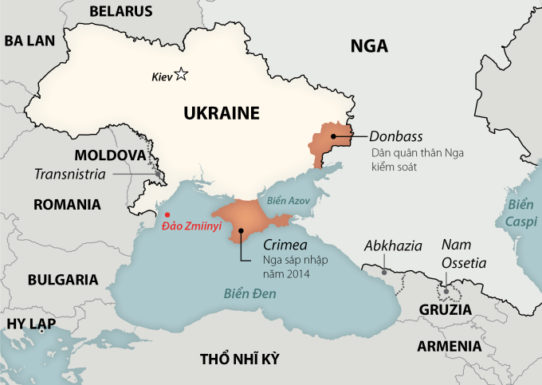

Quân đội Ukraine cho biết đã dùng máy bay không người lái tập kích vị trí lực lượng Nga trên đảo Zmiinyi tại Biển Đen.
Bộ tư lệnh Tác chiến miền Nam của quân đội Ukraine ngày 3/5 công bố video cho thấy máy bay không người lái (UAV) Bayraktar TB2 tấn công vào khu vực gần tháp thông tin liên lạc cùng một mục tiêu dường như là kho đạn. Lực lượng này cho biết đây là hai vị trí của lực lượng Nga trên đảo Zmiinyi ở Biển Đen.
Video vụ tập kích bằng UAV Bayraktar TB2 được quân đội Ukraine công bố ngày 3/5. Video: Bộ tư lệnh Tác chiến miền Nam Ukraine
Quân đội Ukraine không nói rõ thời điểm diễn ra vụ tập kích. CNN đã xác định được vị trí địa điểm trong video và tính xác thực của nó.
Nga chưa bình luận về thông tin này. Quân đội Ukraine ngày 26/4 cũng tuyên bố tập kích trạm kiểm soát cùng hệ thống phòng không của Nga trên đảo Zmiinyi.
UAV Bayraktar TB2 được Thổ Nhĩ Kỳ sản xuất và cung cấp cho Ukraine. Mẫu UAV này có sải cánh 12 m, mang được 55 kg vũ khí và có khả năng hoạt động 27 giờ liên tục ở khoảng cách 300 km so với đài điều khiển.
Bayraktar TB2 còn được trang bị tên lửa dẫn đường bằng laser MAM-L với 4 loại đầu nổ có khối lượng tối đa 22 kg, được coi là mối đe dọa hàng đầu với xe tăng, thiết giáp trên chiến trường.
Đảo Zmiinyi có diện tích khoảng 17 hecta, nằm trên Biển Đen, cách bờ biển Oddessa khoảng 35 km. Trước chiến sự, lực lượng biên phòng Ukraine bố trí đơn vị đồn trú khoảng 100 lính biên phòng bảo vệ đảo.
Ngay sau khi phát động chiến dịch quân sự đặc biệt nhằm "phi quân sự và phi phát xít hóa Ukraine" ngày 24/2, Nga điều chiến hạm áp sát đảo Zmiinyy và yêu cầu lực lượng phòng thủ tại đây đầu hàng. Biên phòng Ukraine sau đó thông báo Nga đã kiểm soát đảo Zmiinyy, hạ tầng trên đảo bị phá hủy sau các trận không kích và pháo kích.
Phía Ukraine cho rằng toàn bộ binh sĩ trên đảo Zmiinyy thiệt mạng trong giao tranh với Nga. Tuy nhiên, Bộ Quốc phòng Nga sau đó công bố video cho thấy 82 binh sĩ Ukraine trên đảo Zmiinyy hạ vũ khí đầu hàng. Những binh sĩ này được Nga đưa về cảng Sevastopol tại bán đảo Crimea và trao trả cho Ukraine sau đó.
Vị trí đảo Zmiinyi. Đồ họa: Washington Post.